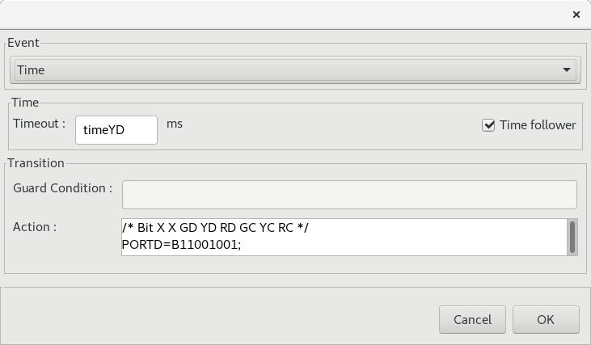
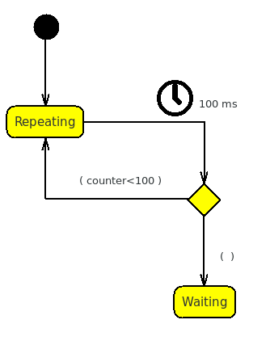
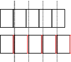
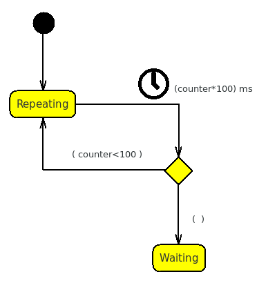
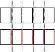
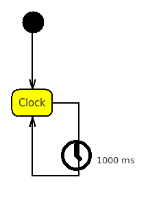
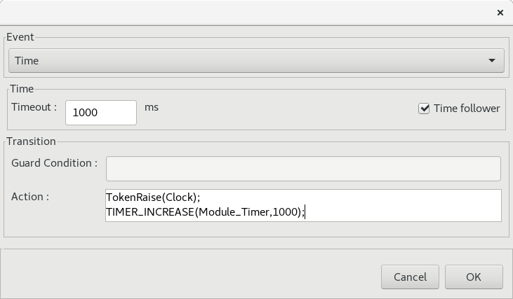

Time followers
A Bug
Let's go back to the previous example :

Then suppose we are in YDir waiting for Green on the
cross direction.
Just before the transition shooting, someone presses the
pedestrian button, and immediately the Semaphore enters
in YDir2 and start to wait the same time timeYD
again.
This is wrong, because it results in a double yellow time.
We can better understand what happens, by looking at the produced
code.
case State_GDir:
...
TRACE_STATE(Semaphore,YDir)
Semaphore_State = State_YDir;
TIMER_RESET(Semaphore_Timer)
break;
}
break;
Due to the fact that there is a Timed transition exiting
from GDir the related code contains the TIME_RESET
command.
The same thing happens in YDIR because of the timeYD
transitions.
case State_YDir:
TIMER_TIMEOUT(Semaphore_Timer,timeYD)
{
/* Bit X X GD YD RD GC YC RC */
PORTD=B11001100;
TRACE_STATE(Semaphore,GCross)
Semaphore_State = State_GCross;
TIMER_RESET(Semaphore_Timer)
break;
}
TOKEN_CHECK(Token_Booked)
{
TOKEN_USE_LIMIT(Token_Booked,1)
TRACE_STATE(Semaphore,YDir2)
Semaphore_State = State_YDir2;
TIMER_RESET(Semaphore_Timer)
break;
}
break;
Now let's see what happens in YDir if we check the Time
follower flag in YDir2 :

case State_YDir:
TIMER_TIMEOUT(Semaphore_Timer,timeYD)
{
/* Bit X X GD YD RD GC YC RC */
PORTD=B11001100;
TRACE_STATE(Semaphore,GCross)
Semaphore_State = State_GCross;
TIMER_RESET(Semaphore_Timer)
break;
}
TOKEN_CHECK(Token_Booked)
{
TOKEN_USE_LIMIT(Token_Booked,1)
TRACE_STATE(Semaphore,YDir2)
Semaphore_State = State_YDir2;
break;
}
break;
As you can see the TIME_RESET when booked is not called and
the timer is not reinitialized so, when the Semaphore falls
in YDir2 it will continue to consume the programmed time
instead of reinitialize a new cycle.
Advanced use of the Time Followers
The lost time problem
Another fair use of the Time Followers, is the recovery of
the time lost in transitions.
In the Pedestrian semaphore for example, we have a counter to manage
GOn and GOff, that switches for seven times, with two
pauses of 500ms, so this time should be 7 seconds precisely.
This is not true because the time is always a bit greater, and the
real problem is that it raises after each timed transition.
This is not a problem for a semaphore, because we are talking of
milliseconds, but if we have to send for example a train of pulses,
of a precise length in a precise time slot :
For example we need to send 100 synchronized signals
of 100 ms each one in a 10 seconds time slot, the counter is reset
in the Init State .
The picture below, shows you what happens with the module :

Suppose each square represents the time slot for a single state
advance. The time is checked in the main loop but when the time
expires, the loop might be involved in another module and it will
not recognized until the program reached the related check.
The average yielded time then, must be added to the time used to
travel the transition, and finally we have the real time passed,
that usually is some ms greater, for example 102 instead of 100.
The problem is that at the next transition the wrong time becomes
the new base, the error will grow, and the train will lose the
synchronization.
A different approach to the same problem is the following one :
Here, we have a starting state that performs the
first signals and increases the counter for the first time.
The other time condition is a Time follower and it never
requires to reset the timer. The time limit is determined every time
as the product of counter*100 ms.
We need to explicitly reset the time in the Init State
together with the counter by using the following code :
counter=0;
TIMER_RESET(Module_Timer)
This is as the resulting pulse train could appear as follows :

In this train, the previous error is corrected and the last error
only is involved, due to the fact that this is not a real time
approach.
The 25 days limit
With this approach you can manage sequences for at most 25 days,
that is the limit, but what for example if you want to build a Wall
clock emitting a token every seconds, forever to increase the time
counter ?

By the way, welcome to the Auto-Ring
concept.
In this case we always use the Time follower concept and the
explicit reset into the Init State but we do not use
any counter.
We use another macro instead called : TIMER_INCREASE inside
the Action of the transition :
TIMER_INCREASE(Module_Timer,1000);
This macro does not reset the Module_Timer to the current time, but increases the old value by adding the same amount of time we are waiting.
This approach has the same effect of the previous product by the counter, but it manages the overflow situations.